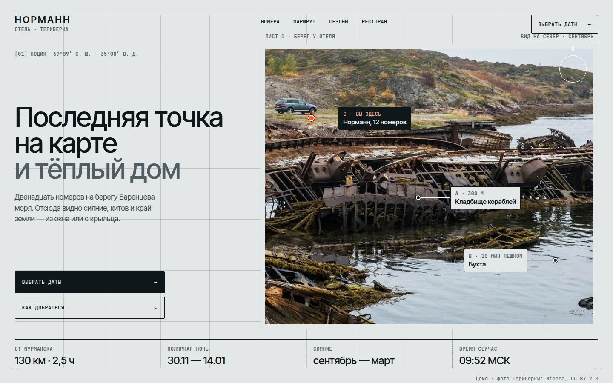
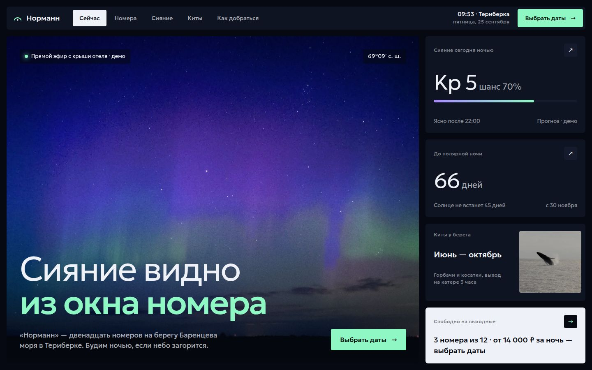
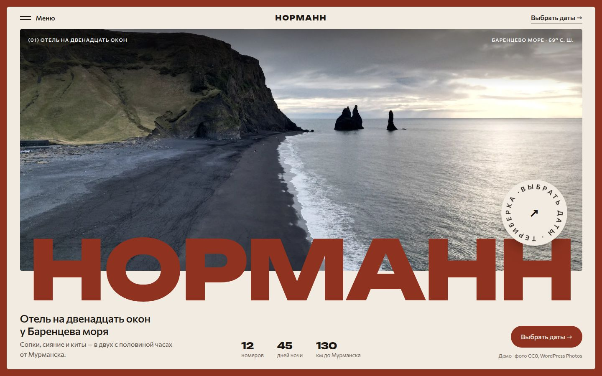
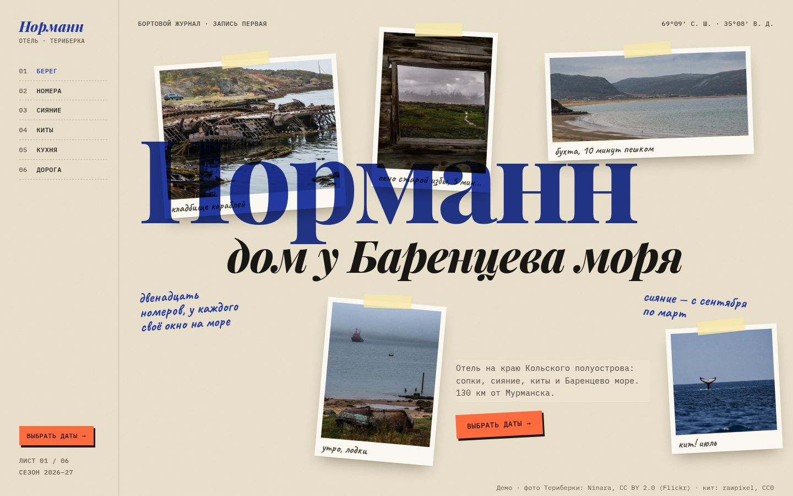

A · Лоция
пресет «Чертёж»Страница как морская карта: чертёжная сетка с крестиками, моноширинные координаты, выноски к точкам на берегу, сигнальный оранжевый цвета буя.
Отель на 12 номеров в Териберке. Четыре разные системы — сетка, шрифты, кнопки, подача фото. Откройте каждый вариант и сравните на телефоне и компьютере.

Страница как морская карта: чертёжная сетка с крестиками, моноширинные координаты, выноски к точкам на берегу, сигнальный оранжевый цвета буя.

Ночной экран с живыми данными: сияние на весь кадр, справа карточки — прогноз сияния, дни до полярной ночи, киты, свободные номера.

Сайт в рамке цвета ржавых корпусов кладбища кораблей, гигантское название наползает на кадр, вращающийся бейдж бронирования, меню-карточка.

Крафт-бумага и вырезки реальных фото Териберки со скотчем, заметки от руки, штемпель, боковое оглавление и кнопка-стикер.